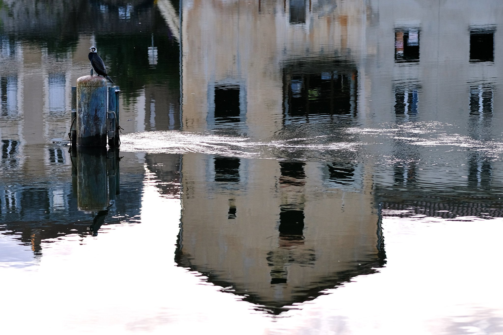
Lot (46) - ISO 320 1/350s f/2.5 90mm - FUJIFILM X-S10
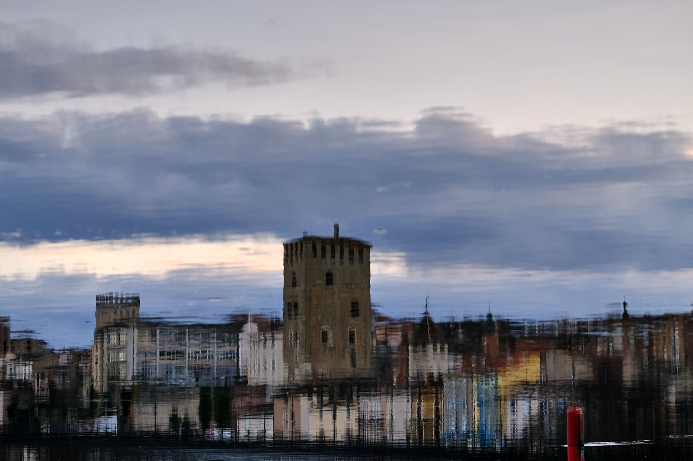
Lot (46) - ISO 160 1/350s f/2.2 90mm - FUJIFILM X-S10
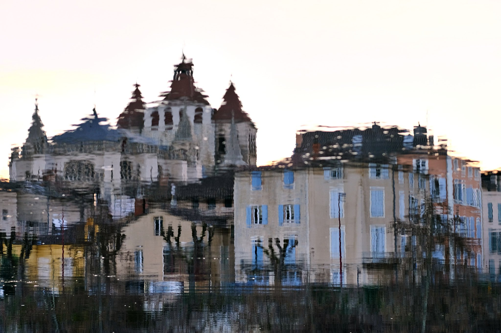
Lot (46) - ISO 320 1/280s f/2.8 90mm - FUJIFILM X-S10
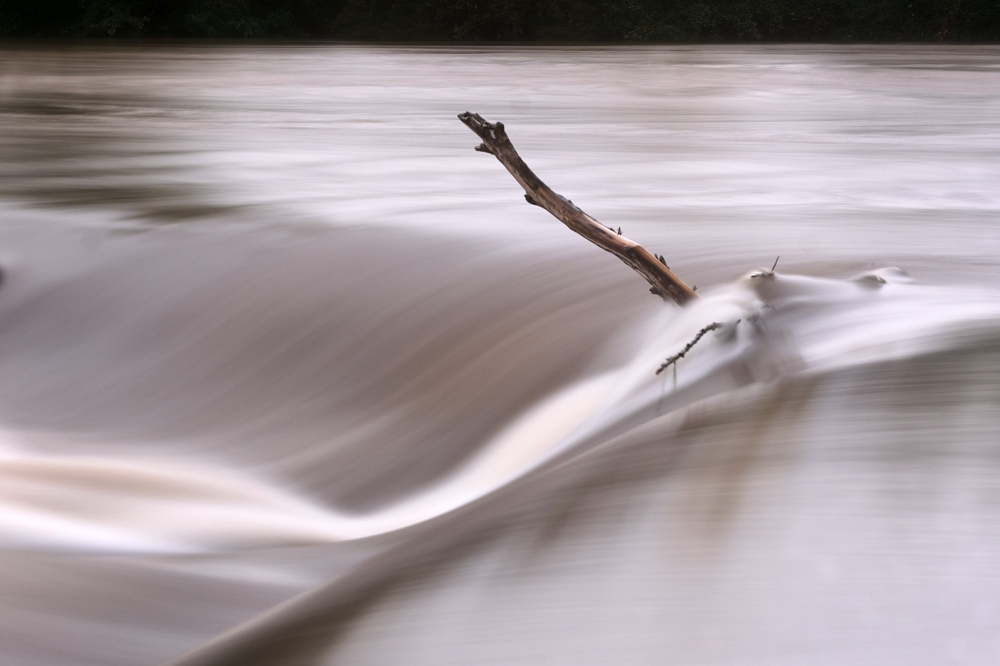
Lot (46) - ISO 160 10s f/8 90mm - FUJIFILM X-S10
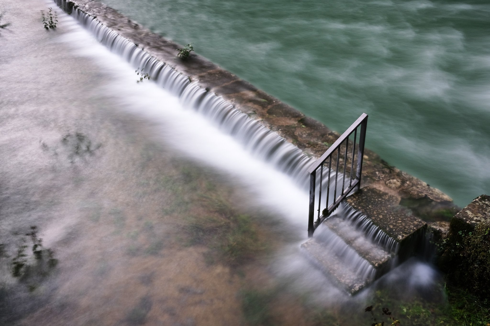
Lot (46) - ISO 160 10s f/11 18mm - FUJIFILM X-S10
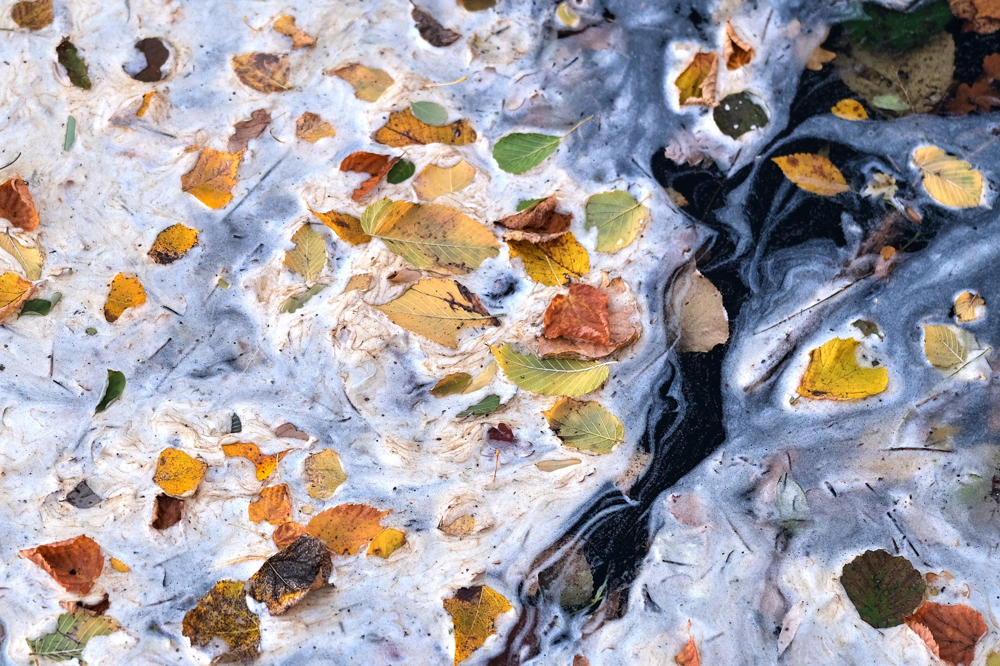
Lot (46) - ISO 400 1/250s f/2 90mm - FUJIFILM X-S10
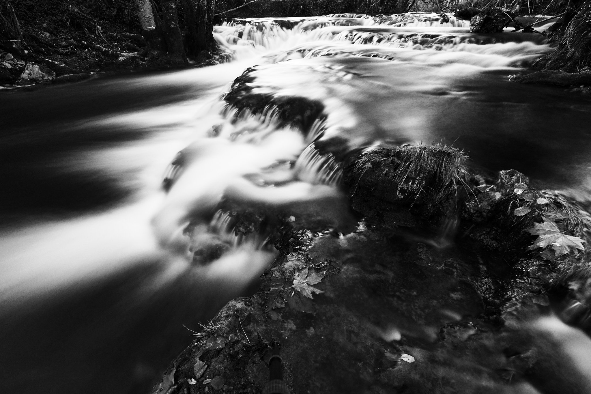
Lot (46) - ISO 250 13s f/3.5 8mm - FUJIFILM X-S10
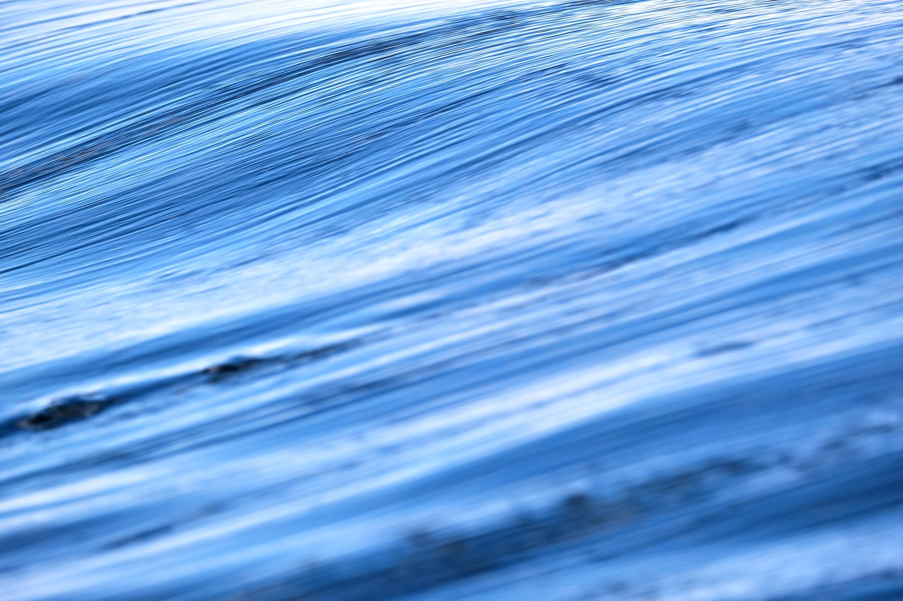
Lot (46) - ISO 160 1/600s f/5.6 300mm - FUJIFILM X-S10
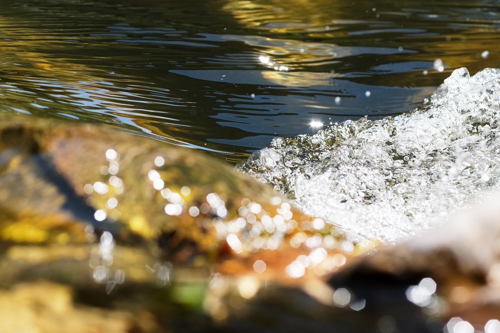
Lot (46) - ISO 320 1/1600s f/4.5 90mm - FUJIFILM X-S10
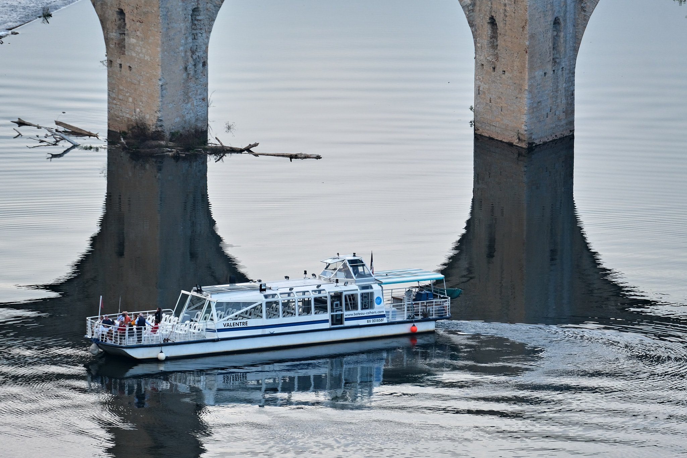
Lot (46) - ISO 500 1/600s f/5.6 400mm - FUJIFILM X-S10
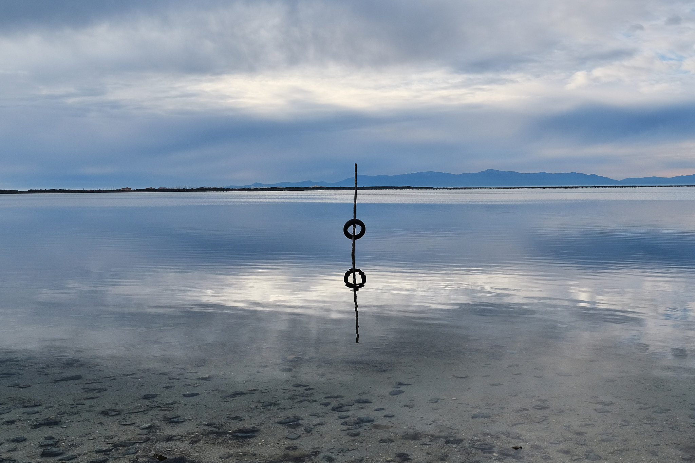
Leucate (11) - ISO 320 1/550s f/4 18mm - FUJIFILM X-S10
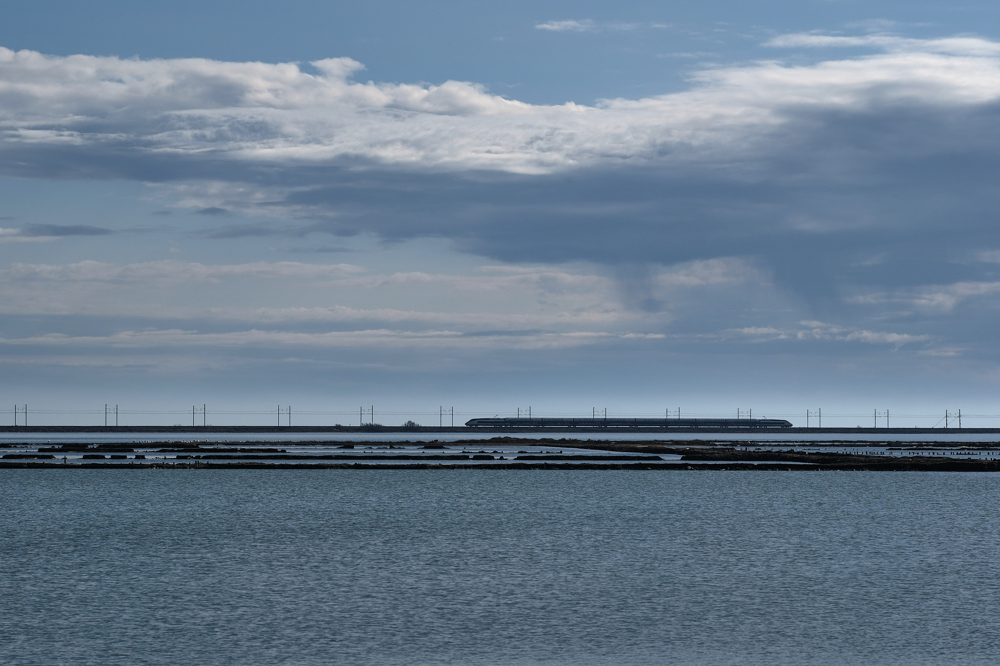
Leucate (11) - ISO 125 1/340s f/7.1 90mm - FUJIFILM X-T5
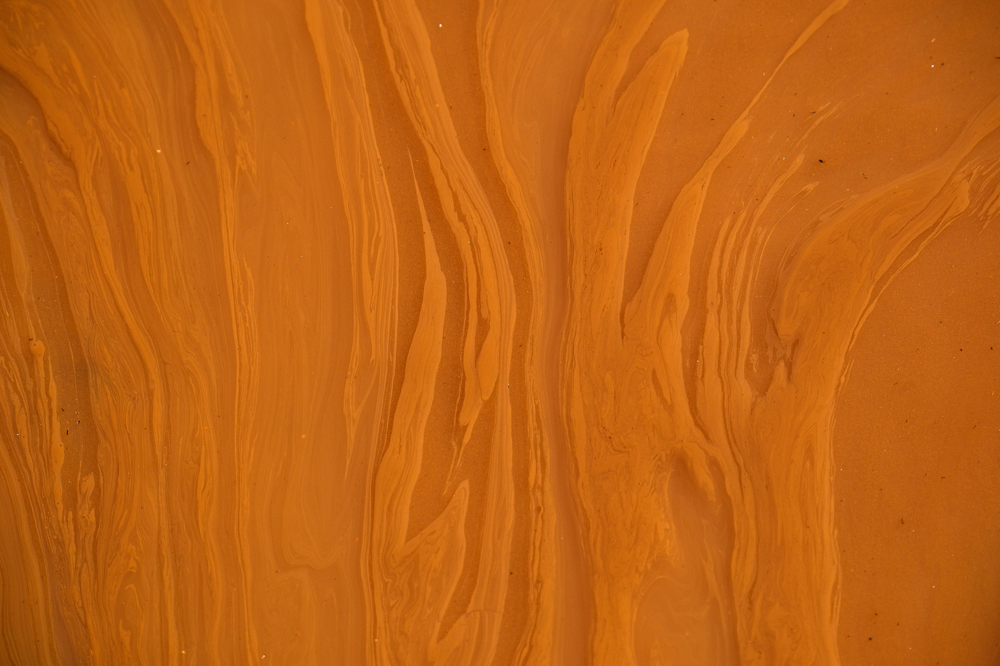
Haut Languedoc - ISO 125 1/350s f/5.6 100mm - FUJIFILM X-T5
❮
 ❯
❯